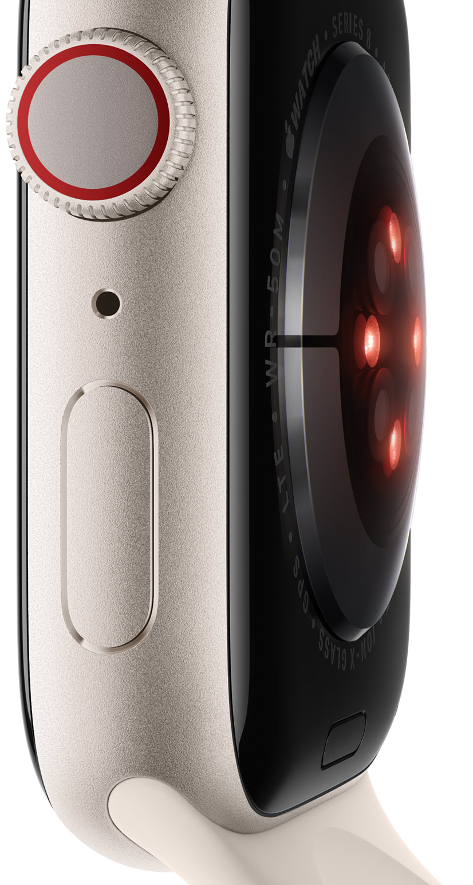
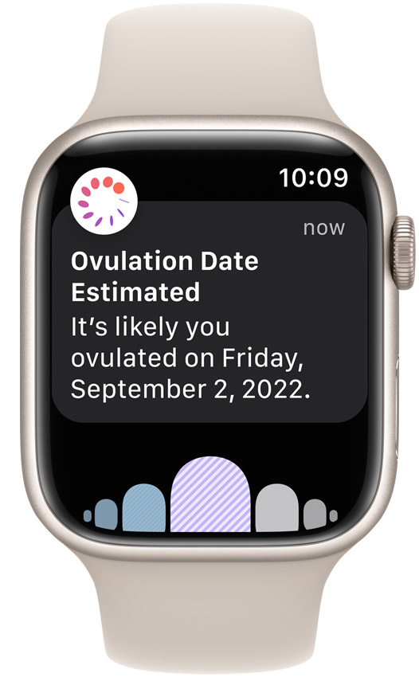
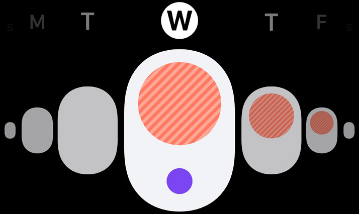

Health

The more informed you are about your health, the more empowered you are to affect it. Advanced health sensors in Apple Watch Series 8 provide insights to help you better understand your health.

Temperature sensing
Understand your cycle like never before.
Apple Watch Series 8 has an innovative sensor that tracks your temperature while you sleep, so you can see changes over time. Cycle Tracking uses this data to provide a retrospective estimate of when you likely ovulated, which can be helpful for family planning. When combined with your heart rate and logged cycle data, you’ll get a detailed view of your menstrual cycle.
Learn about temperature sensingAn easier way to understand when you likely ovulated.
Learn about advanced Cycle Tracking

Period predictions. Less of a question mark.
Get improved period predictions with wrist temperature data. And receive notifications if your logged cycle data shows a possible cycle deviation, like irregular or prolonged periods. You can share your cycle history with your healthcare provider for more informed conversations
